Dalla vendita al margine di commessa, per software house che lavorano con team misti e strumenti AI.
Odoo 18.0 Community · una sola app · nessuna modifica al core né ai moduli OCA
Indice: Video · 1. Esigenze · 2. Funzionalità · 3. Guida passo-passo · 4. Processi · 5. Ruoli · 6. Guida rapida per ruolo
Il video mostra l'app in uso con gli utenti demo di cinque ruoli (Commerciale, Project Manager, Analista, Amministrazione, Supporto): un ordine nuovo diventa una commessa, il PM pianifica, l'analista consuntiva, scatta l'alert, si leggono costi e margini e infine un cliente apre un ticket dal sito, che il Supporto trova già collegato alla commessa AMS. Didascalie in italiano, nessun audio. Per installazione e configurazione c'è il video tecnico.
Capitoli (il minuto apre il video da quel punto)
Settore. Una software house o società di consulenza IT che vende progetti a corpo, pacchetti di ore prepagati, attività a consuntivo (T&M) e canoni mensili di assistenza (AMS). Il team è misto: Project Manager, analisti funzionali e supporto sono dipendenti; gli sviluppatori sono consulenti esterni che fatturano all'azienda a giornata. Tutti lavorano con strumenti AI (Claude Team, Claude Code, API Anthropic).
Obiettivo. Sapere in ogni momento quanto costa e quanto rende ogni commessa, senza appesantire chi segna le ore. Odoo 18 Community copre vendite, progetti, fogli ore e contabilità, ma non la pianificazione delle persone (modulo Enterprise), né tre aspetti propri di questo modello di lavoro: il lavoro in parallelo su più commesse grazie all'AI, il costo dei consulenti che arriva solo con la loro fattura e il costo degli strumenti AI.
Problemi da risolvere. Se una persona segna 12 ore in una giornata da 8 lavorando in parallelo, il costo non deve raddoppiare. Le fatture dei consulenti e i consumi AI dedicati vanno ribaltati al cliente solo sui contratti T&M, con un ricarico. Le licenze AI vanno distribuite sulle commesse senza chiedere a nessuno di tracciare i prompt. Il monte ore venduto va sorvegliato prima che si esaurisca, e ogni ora scalata deve dire su quale task è stata spesa.
Priorità e vincoli. Tutto in un'unica app installabile anche in un altro Odoo 18 CE; nessuna modifica al core né ai moduli OCA; nessuna burocrazia aggiuntiva nei fogli ore; ambiente demo funzionante senza credenziali esterne.
Le schermate sono d'esempio: i riquadri numerati corrispondono alle voci sotto ogni figura.
Quando il Commerciale conferma un ordine di servizi, Odoo crea una commessa visibile solo agli invitati, con le ore vendute e 4 task già stimati (Analisi 15%, PM 10%, Sviluppo 60%, Test 15%). Ogni ora segnata aggiorna il consumo: al 75% compare un avviso giallo, al 90% rosso; la prima volta che si supera una soglia, PM e venditore ricevono un messaggio e un'attività. Nei canoni AMS il consumo è calcolato sul mese corrente e il Supporto segue la commessa in automatico.
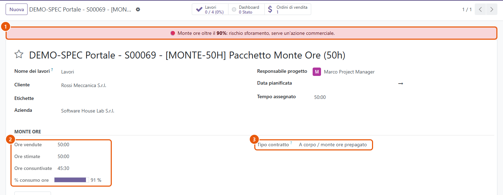
Figura 1 – Scheda commessa a corpo. 1. Avviso rosso: monte ore oltre il 90%. 2. Gruppo Monte ore: ore vendute, stimate, consuntivate e percentuale di consumo. 3. Tipo contratto, ricavato dal prodotto venduto: decide se costi esterni e spese si ribaltano al cliente (solo T&M).
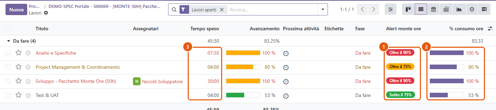
Figura 2 – Task della commessa. 1. Alert monte ore per task, sulle ore stimate del task. 2. Barra di consumo. 3. Ore consuntivate dai fogli ore e dai turni confermati.
Il PM pianifica turni (persona, giorno, task, ore) e li pubblica; la persona li conferma a fine giornata, eventualmente correggendo le ore, e Odoo crea la riga del foglio ore. Ogni persona può avere al massimo 32 h a settimana (80% di 40 h) moltiplicate per il suo fattore parallelo: 1,0 per chi segue un progetto alla volta, 1,5 per un senior che con Claude Code segue più commesse. Il PM può correggere il fattore per una singola settimana. Oltre il limite il turno non si salva.
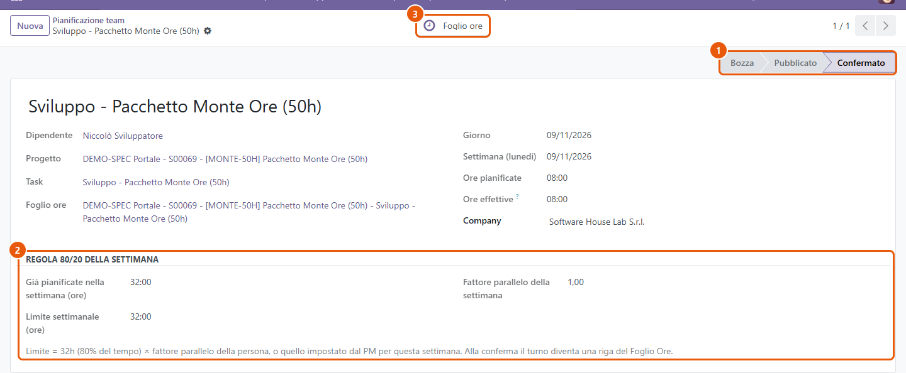
Figura 3 – Turno confermato. 1. Stato: bozza → pubblicato → confermato. 2. Riquadro Regola 80/20 della settimana: ore già pianificate, limite reale e fattore usato. 3. Pulsante Foglio ore.
Se una persona segna in un giorno più ore del suo calendario, le ore restano tutte e si fatturano tutte, ma il costo della giornata si divide tra le commesse (6 h + 6 h in una giornata da 8 h valgono 8 h di costo). Le righe di quel giorno diventano da approvare: sui contratti T&M entrano in fattura solo dopo l'approvazione del PM.
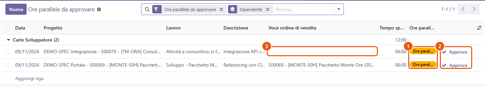
Figura 4 – Ore parallele da approvare. 1. Stato Ore parallele da approvare. 2. Pulsante Approva, riservato al PM. 3. Le ore dei consulenti esterni sui T&M non hanno voce d'ordine: si fatturano tramite la loro fattura (2.4).
Per un consulente esterno la scheda persona indica il fornitore che fattura e la tariffa concordata. Le sue ore non hanno un costo da dipendente: finché la fattura non arriva, la commessa vede un costo maturato (ore × tariffa). Quando l'Amministrazione conferma la fattura fornitore indicando il consulente, Odoo collega le ore e mostra lo scostamento. Se la commessa è T&M, la riga della fattura si aggiunge all'ordine del cliente al costo + ricarico (15% predefinito, modificabile per commessa). Sulle commesse a corpo e sui canoni resta solo un costo.
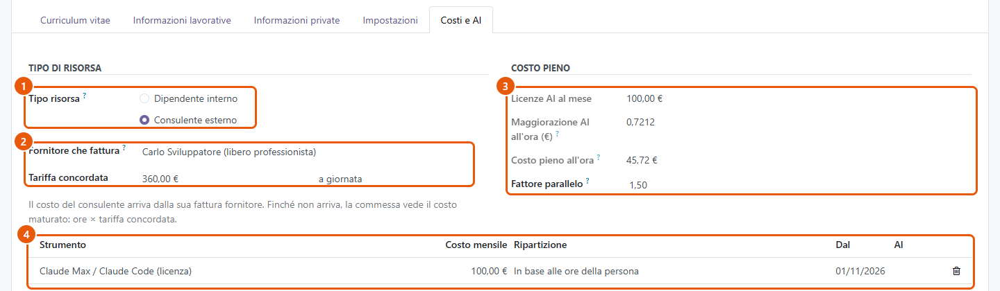
Figura 5 – Scheda persona, Costi e AI. 1. Tipo risorsa: dipendente o consulente esterno. 2. Fornitore e tariffa concordata. 3. Costo pieno: licenze AI, maggiorazione AI all'ora, fattore parallelo. 4. Licenze AI assegnate.
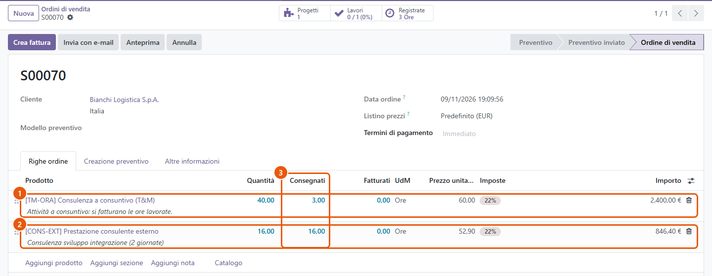
Figura 6 – Ordine T&M con la fattura del consulente ribaltata. 1. Riga T&M a ore: si consegnano solo le ore interne. 2. Riga aggiunta dalla fattura del consulente, al costo + ricarico. 3. Consegnati: la quantità che andrà in fattura.
Le licenze AI a canone si assegnano alle persone; i consumi a pagamento (API, Claude Code) si registrano a mano, da CSV o, se configurato, dall'API costi di Anthropic. Una tabella di corrispondenze decide dove va ogni consumo: un workspace o una chiave dedicati vanno sulla loro commessa, il consumo di una persona si divide sulle sue ore del mese, il resto va nei costi generali. Ogni notte Odoo ripartisce il mese aperto; a fine mese l'Amministrazione lo chiude e i consumi dedicati alle commesse T&M diventano spese vive sull'ordine del cliente.
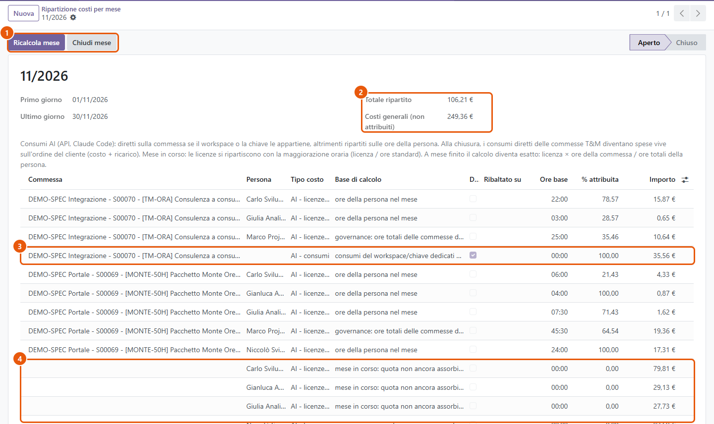
Figura 7 – Ripartizione del mese. 1. Ricalcola mese e Chiudi mese (Amministrazione, a mese finito). 2. Totale ripartito e costi generali. 3. Consumo API dedicato alla commessa T&M, da ribaltare. 4. Mese in corso: la licenza non ancora assorbita dalle ore resta nei costi generali.
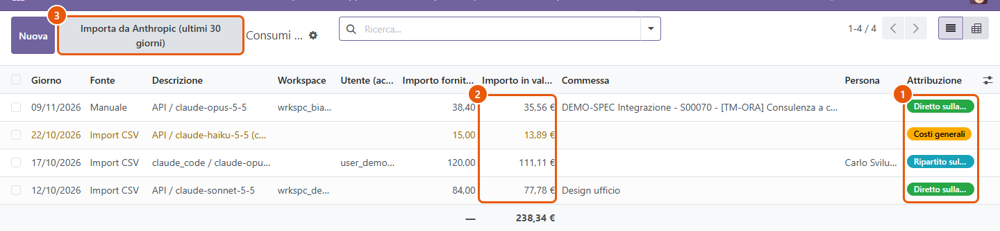
Figura 8 – Consumi AI. 1. Attribuzione: diretto, ripartito sulla persona, costi generali. 2. Importo convertito in euro. 3. Importa da Anthropic: connettore facoltativo, spento senza chiave.
Il report mette a confronto i ricavi (venduto, e per i T&M le ore consegnate per il prezzo, più quanto ribaltato al cliente) con i costi divisi per natura: lavoro interno, AI, consulenti esterni, altri fornitori. Mostra anche il margine senza pass-through e le ore risparmiate rispetto alla stima.
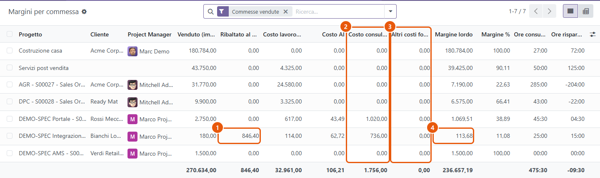
Figura 9 – Margini per commessa. 1. Ribaltato al cliente, al netto dello sconto di riga. 2. Costo consulenti esterni (fatture + maturato). 3. Altri costi fornitori. 4. Margine lordo.
Ogni foglio ore porta il task e la riga dell'ordine (il pacchetto): le ore scalate sono sempre riconducibili a un'attività. Sulle commesse vendute a ore (monte ore e T&M) un foglio ore senza task non si salva; sui canoni AMS resta facoltativo. Il progetto ha la scheda Costi, ricavi e margine (PM e Amministrazione), con gli stessi numeri del report; ogni pacchetto mostra ore vendute, scalate e residue, e il pulsante Ore per task apre il dettaglio.
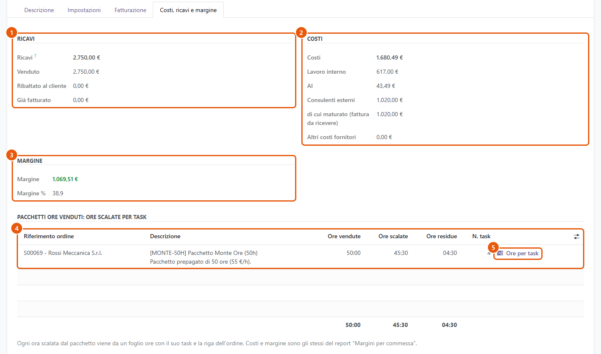
Figura 10 – Scheda Costi, ricavi e margine. 1. Ricavi. 2. Costi. 3. Margine. 4. Pacchetti venduti con ore scalate e residue (rosso se sforato). 5. Ore per task.
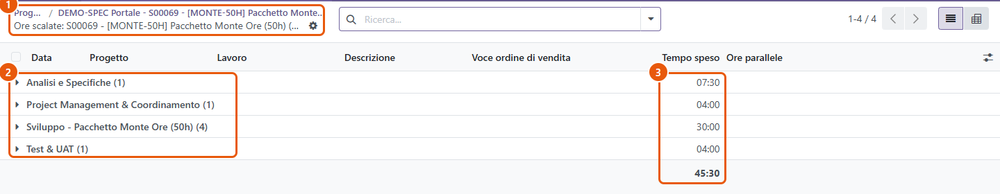
Figura 11 – Ore scalate dal pacchetto, raggruppate per task. 1. Il pacchetto. 2. Un gruppo per task, con le singole registrazioni. 3. Ore per task e totale.
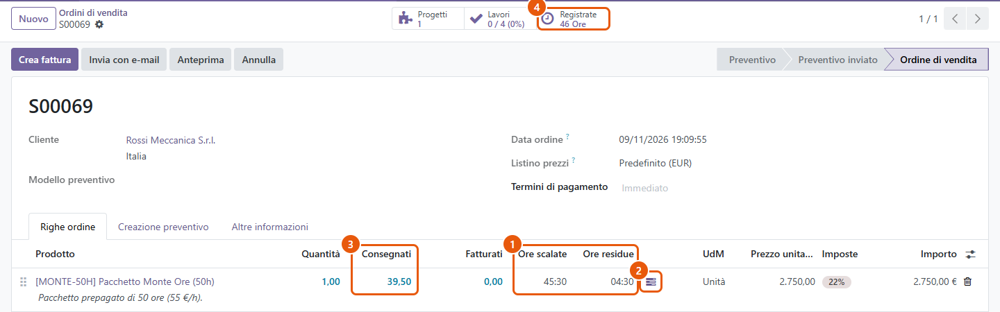
Figura 12 – Riga d'ordine del pacchetto. 1. Ore scalate e residue. 2. Dettaglio per task. 3. Consegnati: esclude le ore parallele non ancora approvate. 4. Totale ore registrate sull'ordine.
Aprendo un progetto il PM trova in alto la panoramica: ricavi, costi, margine (in € e %), già fatturato, da fatturare, ore consuntivate su ore vendute. I pulsanti in testa aprono i fogli ore (raggruppati per persona), gli ordini di vendita, le fatture clienti e fornitori della commessa (per chi ha accesso alla contabilità), i costi AI ripartiti e il margine. Il pannello Redditività della Dashboard di Odoo mostra gli stessi numeri della scheda Costi, ricavi e margine (anche AI e consulenti): c'è un solo margine.
Il chatter del progetto è la sua cronologia, in ordine di data: ordini confermati, fatture emesse e ricevute, ticket aperti e chiusi, avvisi sul monte ore, SAL (Dashboard › Nuovo aggiornamento, con stato e avanzamento), incontri pianificati nel Calendario dal progetto, call e incontri fatti (pulsante Attività › Chiamata, Incontro o SAL, poi Fatto con l'esito), cambi di responsabile, cliente, date e fase. Le note sono interne: non arrivano al cliente.
Visione d'insieme. L'elenco dei progetti (vista lista) mostra per ogni commessa tipo di contratto, % ore, ricavi, costi, margine e margine %, con i totali in fondo. Il report Margini per commessa si raggruppa per cliente o per PM, ha il filtro I miei progetti e un grafico. I nomi delle commesse sono brevi (riferimento del cliente oppure Cliente – Prodotto): l'ordine resta nel suo pulsante.
Chi vede i numeri. Ricavi, costi e margini sono visibili solo a PM, Amministrazione e Responsabili progetti. Sviluppatori e Supporto vedono il progetto, i task e le proprie ore, ma non i numeri economici.
Il cliente apre una richiesta in tre modi: scrive all'indirizzo dell'assistenza (alias assistenza@ del dominio della posta), compila il modulo pubblico Assistenza del sito (/assistenza, senza login) oppure entra nel portale clienti (I miei ticket). Odoo riconosce il contatto dall'email e, se il cliente ha un canone AMS, collega da solo il ticket alla sua commessa: le ore segnate sul ticket scalano il monte ore del mese e fanno scattare gli alert 75%/90% come gli altri fogli ore. Per i clienti con monte ore, T&M o a corpo la commessa la sceglie il Supporto, insieme al task (obbligatorio su quei contratti).
Ogni ticket ha un tipo (malfunzionamento, domanda, richiesta di modifica), un'area, una priorità e gli SLA del contratto: sui canoni AMS presa in carico entro 4 ore lavorative se urgente, 8 se alta, 2 giorni negli altri casi, e risoluzione entro 5 giorni; senza canone presa in carico entro 3 giorni. Mentre il ticket è In attesa del cliente il tempo si ferma. Il cliente riceve un'email in italiano all'apertura, alla presa in carico, quando serve una sua risposta e alla chiusura; ogni email ha il pulsante Segui il ticket, che apre la pagina del ticket anche senza account. Quando il ticket passa a Fatto parte la richiesta di valutazione (da 1 a 5).
Kanban nel portale. I clienti con accesso al portale seguono i propri ticket in I miei ticket › Vista Kanban (/my/tickets/kanban): tre colonne pensate per il cliente, Ci stiamo lavorando (il Supporto gestisce la richiesta), Serve un tuo riscontro (il Supporto aspetta una risposta o un aggiornamento) e Risolto; su ogni scheda la fase precisa, con urgenza, tipo e chi lo ha in carico; filtro Tutta l'azienda / Solo i miei. Ogni colonna si riduce o si espande cliccando sul titolo, come nel Kanban di Odoo; Risolto parte ridotta e il browser ricorda la scelta. La colonna in cui ogni fase appare si sceglie in Helpdesk › Configurazione › Fasi, campo Colonna nel portale. La bacheca si aggiorna in tempo reale quando il Supporto sposta un ticket (e comunque ogni minuto). Ogni cliente vede solo i ticket della propria azienda: lo garantisce una regola di sicurezza del database, valida anche se per errore una persona viene aggiunta come follower al ticket di un altro cliente. Utenti di prova: mario.verdi@verdiretail.example (Verdi Retail) e luca.rossi@rossimeccanica.example (Rossi Meccanica).
Conferma via email. La pagina Assistenza è la stessa per tutti i clienti: l'azienda si riconosce dall'email scritta nel modulo. Perché nessuno possa aprire ticket a nome di un altro cliente (e consumarne il monte ore), il ticket dal sito nasce da confermare: il cliente riceve un'email con il pulsante Conferma la richiesta e solo dopo il clic il ticket si collega all'azienda e alla commessa e partono gli SLA. Chi è entrato con il proprio account e usa la propria email non deve confermare. Il Supporto vede l'avviso Da confermare (filtro omonimo) e può confermare a mano, ad esempio dopo una telefonata; le richieste mai confermate si archiviano dopo 7 giorni.
Nel modulo pubblico la descrizione si scrive come una email: grassetto, corsivo, sottolineato, elenchi puntati e numerati, link e immagini (con il pulsante, incollando una schermata con Ctrl+V o trascinandola). Le immagini diventano allegati del ticket e si vedono anche dalla pagina Segui il ticket; il testo viene ripulito da qualsiasi codice pericoloso.
Protezioni del modulo pubblico: nessun limite al numero di ticket che il cliente può aprire. Un campo esca nascosto ferma i bot. A ogni indirizzo parte una sola email di conferma alla volta: se ne aspetta già una, le richieste successive non ne mandano altre, e il clic sul link le conferma tutte. Così nessuno può usare il modulo per inondare di email l'indirizzo di un altro. In produzione si consiglia di attivare Cloudflare Turnstile o reCAPTCHA (moduli standard di Odoo, chiavi in Impostazioni › Sito web): fermano i programmi automatici e alle persone non chiedono nulla.
Ore da fare e assenze. Le ore che ogni persona deve fare sono nella sua scheda (Dipendenti › persona › Informazioni di lavoro › Orario di lavoro, es. 40 ore o part-time 20 ore). Le assenze si chiedono con Ferie e permessi e il responsabile le approva. Ogni giorno lavorativo Odoo calcola le ore attese (orario meno assenze e festività) e le confronta con le ore registrate nei fogli ore. Per riunioni, formazione e attività non dei clienti si usa il progetto Interno. Chi non registra ore (es. l'amministratore di sistema) ha tolta la spunta Deve consuntivare.
Promemoria solo alla persona. Ogni mattina chi il giorno lavorativo prima ha ore mancanti riceve un'email («mancano 3:00 ore»). Il lunedì ognuno riceve il riepilogo della settimana prima, giorno per giorno. Il PM e l'Amministrazione vedono tutto nel report Pianificazione › Report › Consuntivazione (persona × settimana, ore attese, registrate, mancanti; filtri Settimana scorsa, Con ore mancanti, Consulenti esterni).
Fine mese. In Costi e AI › Ripartizione per mese la scheda del mese mostra ore attese, registrate e mancanti. Chiudi mese non chiude se mancano ore ed elenca chi deve completare; Chiudi comunque chiude lo stesso lasciando annotate le ore mancanti. Dopo la chiusura le ore di quel mese non si possono più aggiungere, modificare o cancellare; per correggere l'Amministrazione riapre il mese.
Ogni task ha sempre i suoi quattro dati. Tempo stimato (ore allocate), inizio e fine pianificati, date di esecuzione (primo e ultimo giorno con ore, calcolate) e tempo effettivo (ore registrate). Il PM trova i task a cui manca la stima o una data in Progetto › Report › Task da stimare, con in cima quelli dove si lavora già. Il task mostra lo stato: Da stimare, Da iniziare, In linea, Inizio in ritardo, Oltre la data di fine, Concluso.
Avanzamento con le ore residue. Quando registra le ore, la persona indica nella colonna Ore residue quante ore mancano per finire il task secondo lei (0 = non cambia). Odoo calcola la stima a finire (ore registrate + ore residue) e l'avanzamento (ore registrate ÷ stima a finire). Se la stima a finire supera il tempo stimato, il task mostra «sforerà la stima» e il PM del progetto riceve un'attività: lo sa prima di sforare, non dopo. Il PM può correggere le ore residue dal task. Nel progetto, accanto ai numeri economici, ci sono avanzamento, task in ritardo, task che sforeranno e task da stimare.
Consulenti esterni. Consuntivano ogni giorno come gli altri. Quando arriva la loro fattura (riga con il campo Consulente), Odoo confronta le ore in fattura (giorni × ore della sua giornata se la tariffa è a giornata) con le ore registrate; se non quadrano lascia una nota sulla fattura. Il riepilogo per consulente è in Costi e AI › Ore consulenti e fatture (Amministrazione).
I passaggi seguono il flusso del video. Per ogni passo: chi lo fa, dove si trova in Odoo e cosa succede dopo.
| # | Chi | Dove | Cosa fare | Risultato |
|---|---|---|---|---|
| 1 | Commerciale / PM | Vendite › Prodotti | Sui servizi indicare Ore per unità (pacchetti e corpo), Ore mensili incluse (canoni) e, se serve, Crea task di gestione interna. I prodotti di base sono già pronti. | Ore vendute calcolate da sole sugli ordini |
| 2 | PM | Progetti › Configurazione › Task di default commessa | Rivedere i task standard e le percentuali (totale sotto il 100%: il resto va allo Sviluppo). | Stime dei task delle nuove commesse |
| 3 | Amministrazione (o HR) | Dipendenti › scheda persona › Costi e AI | Tipo risorsa (dipendente o consulente esterno), fornitore e tariffa dei consulenti, fattore parallelo, licenze AI. | Costi corretti per persona e limite 80/20 personale |
| 4 | Amministrazione | Pianificazione › Costi e AI › Strumenti AI, Licenze AI, Corrispondenze consumi | Catalogo degli strumenti, licenze per persona, collegamento di workspace, chiavi e utenti del fornitore alle commesse o alle persone. | Costi AI attribuibili alle commesse |
| 5 | Amministratore di sistema | Impostazioni › Tecnico › Parametri di sistema | Facoltativo: ore pianificabili a settimana (32), ricarico sui costi ribaltati (15%), collegamento ai consumi AI. Come fare: documentazione tecnica, sezione 9. | Regole adattate all'azienda |
| # | Chi | Dove | Cosa fare | Risultato |
|---|---|---|---|---|
| 1 | Commerciale | Vendite › Ordini › Preventivi › Nuovo | Cliente, poi Aggiungi prodotto (es. Pacchetto Monte Ore 50h). | Preventivo in bozza |
| 2 | Commerciale | Pulsante Conferma | Conferma dell'ordine. | Commessa riservata agli invitati, ore vendute, 4 task stimati; per i canoni anche abbonamento mensile e Supporto tra i follower |
| 3 | PM | Progetti › commessa | Controllare il gruppo Monte ore e il Tipo contratto; sui T&M scegliere il ricarico pass-through; assegnare i task. | Commessa pronta da pianificare |
| # | Chi | Dove | Cosa fare | Risultato |
|---|---|---|---|---|
| 1 | PM | Pianificazione › Pianificazione team › Nuovo | Dipendente, progetto, task, giorno, ore pianificate; Salva. | Turno in bozza; oltre il limite 80/20 Odoo blocca il salvataggio |
| 2 | PM | Pianificazione › Fattore parallelo per settimana | Facoltativo: alzare o abbassare il fattore di una persona per una settimana (es. formazione). | Limite settimanale corretto |
| 3 | PM | Turno › Pubblica al dipendente | Pubblicazione del turno. | La persona vede il turno e riceve un messaggio |
| 4 | Analista / Sviluppatore / Supporto | Pianificazione › I miei turni | A fine giornata correggere le Ore effettive se diverse e premere Conferma turno e crea foglio ore. | Riga del foglio ore con commessa e task (pulsante Foglio ore) |
| 5 | Analista / Sviluppatore / Supporto | Fogli ore › Fogli ore › I miei fogli ore | Per le attività non pianificate: registrare le ore indicando sempre il task (obbligatorio su corpo e T&M). | Ore scalate dal pacchetto, consumo e alert aggiornati |
| 6 | PM | Progetto › Report › Task da stimare | Indicare ore allocate e date di inizio e fine pianificate di ogni task. | Il task esce dalla lista; stato e ritardi si calcolano da soli |
| 7 | Analista / Sviluppatore / Supporto / Consulente | Fogli ore › I miei fogli ore (o il task) | Ogni giorno le ore sul task e, se cambia, le Ore residue. Assenze in Ferie e permessi. | Avanzamento e stima a finire aggiornati; niente promemoria |
| 8 | PM / Amministrazione | Pianificazione › Report › Consuntivazione | Il lunedì controllare la settimana scorsa (filtro Con ore mancanti). | Chi ha ore mancanti è evidenziato in rosso |
| 9 | Amministrazione | Costi e AI › Ripartizione per mese › mese › Chiudi mese | A mese finito, quando le ore sono complete. | Mese chiuso, ore bloccate |
| # | Chi | Dove | Cosa fare | Risultato |
|---|---|---|---|---|
| 1 | PM, Commerciale | Attività e messaggi su progetto e ordine | Al primo superamento del 75% o del 90% arriva un'attività di avviso: valutare con il cliente un'estensione. | Etichette gialle o rosse su commessa e task |
| 2 | PM | Pianificazione › Ore parallele da approvare | Verificare le giornate oltre il calendario e premere Approva. | Sui T&M le ore entrano nel consegnato e quindi in fattura |
| 3 | PM | Commessa › scheda Costi, ricavi e margine › Ore per task | Leggere ricavi, costi, margine e ore scalate di ogni pacchetto. | Dettaglio delle ore per attività |
| 4 | PM | Commessa › Attività › Chiamata, Incontro o SAL; Dashboard › Nuovo aggiornamento | Segnare call, incontri e SAL: con l'esito finiscono nella cronologia (chatter) del progetto, accanto a ordini, fatture e ticket |
| # | Chi | Dove | Cosa fare | Risultato |
|---|---|---|---|---|
| 1 | Amministrazione | Contabilità › Fornitori › Fatture › Nuovo | Fattura del consulente: prodotto Prestazione consulente esterno, campo Consulente sulla riga, distribuzione analitica sulla commessa; Conferma. | Ore del consulente collegate, scostamento fattura/ore; se T&M, riga sull'ordine del cliente al costo + ricarico |
| 2 | Amministrazione | Pianificazione › Costi e AI › Consumi AI | Inserire i consumi a mano, importarli da CSV o con Importa da Anthropic (se configurato). | Ogni consumo attribuito: diretto, per persona o costi generali |
| 3 | PM / Amministrazione | Pianificazione › Costi e AI › Ripartizione per mese | Durante il mese: Ricalcola mese (lo fa anche il cron ogni notte). | Costi AI provvisori sulle commesse |
| 4 | Amministrazione | Stesso menu, a mese finito | Chiudi mese (oppure Riapri, se le spese vive non sono ancora state fatturate). | Ripartizione definitiva; consumi diretti dei T&M come spese vive sull'ordine |
| 5 | Commerciale | Vendite › Ordini › Ordini › ordine › Crea fattura | Preparare la fattura al cliente. | Fattura in bozza (il Commerciale non può registrarla) |
| 6 | Amministrazione | Contabilità › Clienti › Fatture | Controllare e premere Conferma. | Fattura registrata; il fatturato entra nel report margini |
| 7 | PM, Amministrazione | Progetti › Rendicontazione › Margini per commessa | Confrontare le commesse (lista o pivot). | Margine lordo, margine senza pass-through, ore risparmiate |
| # | Chi | Dove | Cosa fare | Risultato |
|---|---|---|---|---|
| 1 | Amministratore di sistema | Impostazioni › Generali › Dominio alias; Impostazioni › Tecnico › Server di posta in arrivo | Una volta sola, in produzione: dominio della posta e casella da cui Odoo legge le email di assistenza@. Facoltativo: chiavi reCAPTCHA del sito. | Le email al Supporto diventano ticket |
| 2 | PM | Helpdesk › Configurazione › Team, SLA, Tipi, Categorie | Membri del team Assistenza clienti (persone del Supporto), tempi SLA per contratto e priorità. | Regole di servizio allineate ai contratti venduti |
| 3 | Cliente | Email all'assistenza, sito › Assistenza, oppure portale › I miei ticket | Descrivere la richiesta (dal sito con grassetto, elenchi, link e schermate incollate con Ctrl+V), con eventuali allegati. Dal sito: cliccare Conferma la richiesta nell'email ricevuta. Seguire l'avanzamento in portale › I miei ticket › Vista Kanban. | Ticket Nuovo, email di conferma con numero e link Segui il ticket |
| 4 | Supporto | Helpdesk › Ticket › Tutti i ticket | Controllare cliente e commessa (se manca, sceglierla; su monte ore e T&M anche il task), Assegna a me, portare il ticket a In corso. | Email di presa in carico; SLA di presa in carico rispettato |
| 5 | Supporto | Ticket › Invia messaggio; scheda Fogli ore | Rispondere al cliente (con In attesa se serve una sua risposta) e segnare le ore sul ticket. | Il cliente riceve la risposta per email; le ore scalano il monte ore della commessa |
| 6 | Supporto | Ticket › stadio Fatto | Chiudere il ticket risolto. | Email di chiusura e richiesta di valutazione al cliente |
| 7 | PM, Commerciale | Helpdesk › Rendicontazione; filtro SLA scaduto | Seguire ritardi, valutazioni e consumo del canone (il Commerciale vede in lettura i ticket dei suoi clienti). | Elementi per il rinnovo o l'estensione del contratto |
Corsie (lane) per ruolo, eventi di inizio e fine, attività e gateway esclusivi per le decisioni. I diagrammi rappresentano solo ciò che l'app fa oggi.
PROC-001/002/003 – Dall'ordine al foglio ore
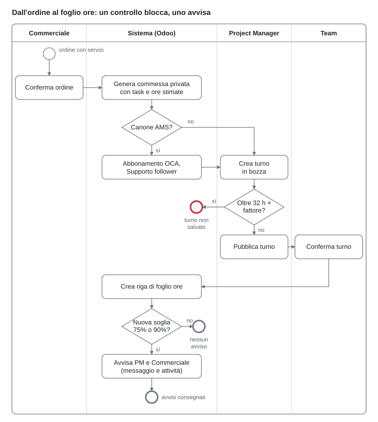
PROC-004/005 – Lavoro in parallelo e fatturazione
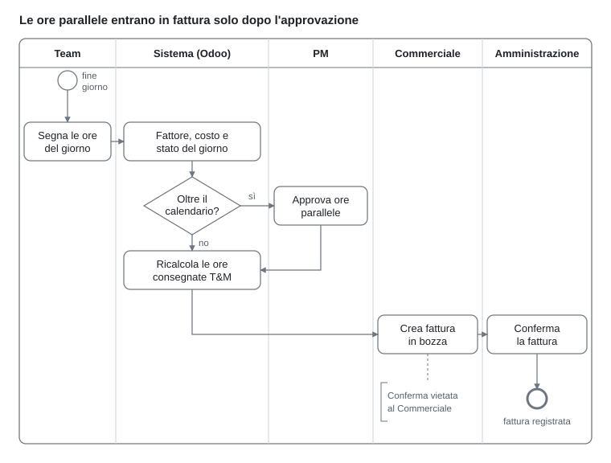
PROC-006 – Consulente esterno e ribaltamento
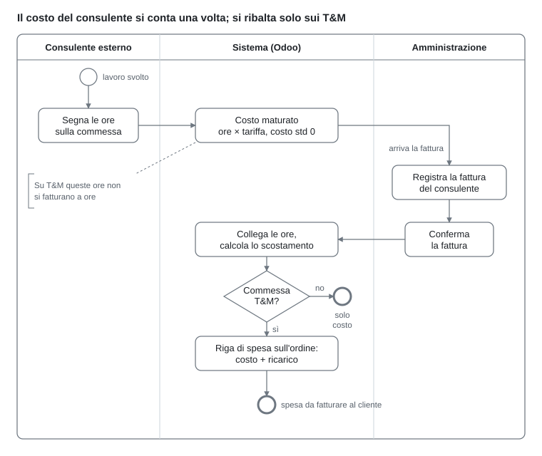
PROC-007 – Chiusura mensile dei costi AI
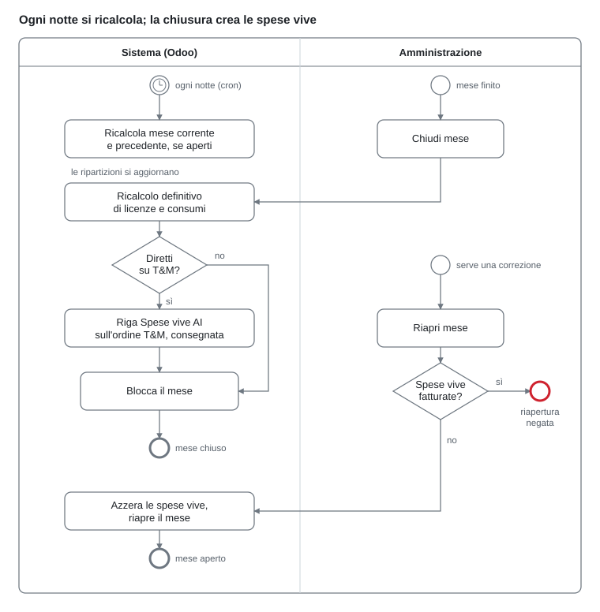
PROC-008 – Consuntivazione giornaliera, settimanale e mensile
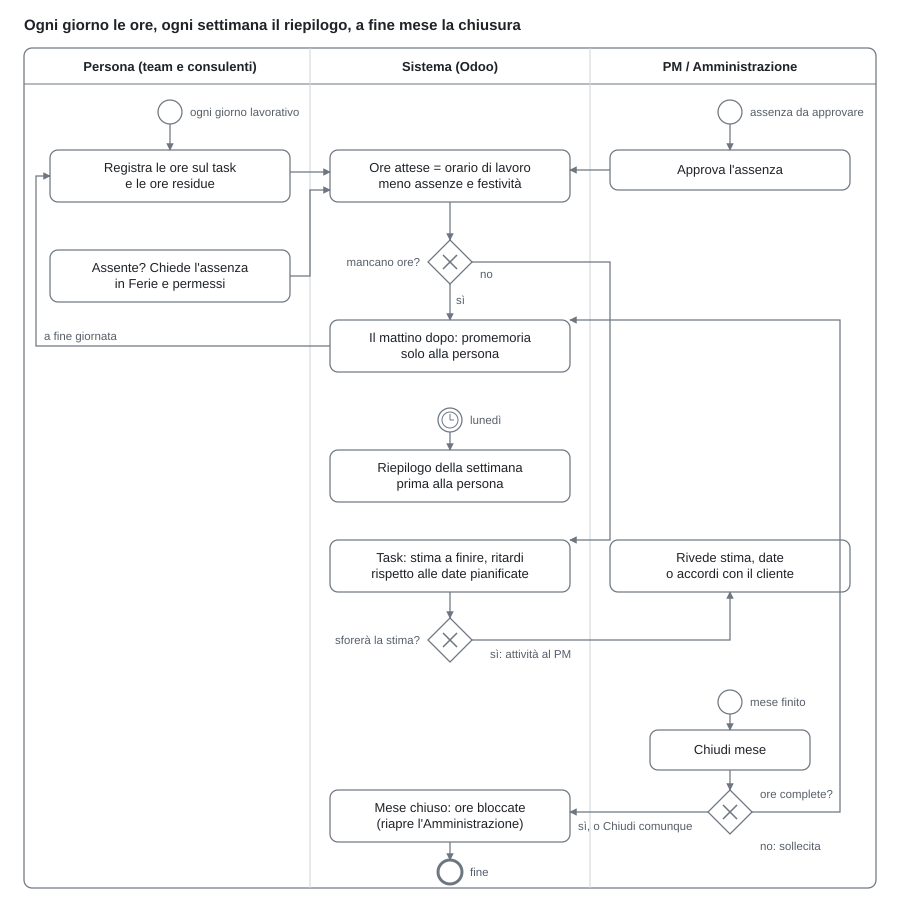
| Ruolo (gruppo dell'app) | Cosa fa |
|---|---|
| Commerciale | Opportunità, preventivi, ordini, fatture in bozza (non le conferma); ticket dei propri clienti in sola lettura |
| Project Manager | Progetti, stime dei task, turni, alert, approvazione ore parallele, fattore parallelo, ricarico pass-through, margini; responsabile Helpdesk (team, SLA, tipi, categorie) |
| Analista funzionale / Sviluppatore | Conferma dei turni, fogli ore con task, task assegnati |
| Supporto | Tutti i ticket: presa in carico, risposte al cliente, ore sul ticket; fogli ore sulle commesse a canone (AMS) |
| Amministrazione | Conferma fatture, fatture dei consulenti, schede persona e tariffe dei consulenti (app Dipendenti), licenze e consumi AI, chiusura del mese |
Cosa fa ogni ruolo e quando. Il dettaglio di ogni passo è nella Guida passo-passo (sezione 3).
| Ruolo | Ogni giorno | Ogni settimana | A fine mese |
|---|---|---|---|
| Commerciale | Prepara preventivi e conferma gli ordini: la commessa nasce da sola. | Segue le opportunità; vede in lettura i ticket dei suoi clienti. | Prepara le fatture in bozza (le conferma l'Amministrazione). |
| Project Manager | Pianifica i turni (regola 80/20), legge gli alert sul monte ore, approva le ore in parallelo. | Controlla Task da stimare, task in ritardo e task che sforeranno; corregge le ore residue. | Legge costi, ricavi e margini delle sue commesse. |
| Analista / Sviluppatore | Conferma i turni e registra le ore sul task, con le ore residue. Le attività interne vanno sul progetto interno. | Il lunedì riceve il riepilogo delle sue ore e completa quelle mancanti. | Completa le ore prima della chiusura del mese; le assenze si chiedono in Ferie e permessi. |
| Consulente esterno | Registra le ore come il team, ogni giorno. | Riceve lo stesso riepilogo del lunedì. | La sua fattura deve corrispondere alle ore registrate: Odoo lo controlla. |
| Supporto | Prende in carico i ticket, risponde al cliente e segna le ore sul ticket. | Controlla i ticket in attesa e gli SLA in scadenza. | — |
| Amministrazione | Approva ferie e permessi (con il responsabile). | Registra le fatture dei consulenti e dei fornitori AI. | Conferma le fatture, chiude il mese (solo con le ore complete) e, se serve, lo riapre. |
Installazione su un altro Odoo 18 CE, parametri, permessi, automazioni, modello dati, regole di calcolo, test e dati di esempio sono nel livello tecnico: